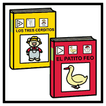

Modulo 14, risorse
da tenere
sulla scrivania
Letture consigliate
 libri
libri leggere
leggere
biblioteca- Come un videogioco. Insegnare e apprendere nella scuola digitale
James P. Gee, a cura di P. C. Rivoltella, Raffaello Cortina - #CUORICONNESSI. Cyberbullismo, bullismo e storie di vite online
Luca Pagliari, Nuova Cantelli - Le virtù del digitale. Per un'etica dei media
P. C. Rivoltella, Morcelliana - A scuola con i media digitali. Problemi, didattiche, strumenti
a cura di P. C. Rivoltella e S. Ferrari, Vita e Pensiero - Universal Design for Learning. Progettazione universale per l'apprendimento e didattica inclusiva
a cura di G. Savia, Erickson